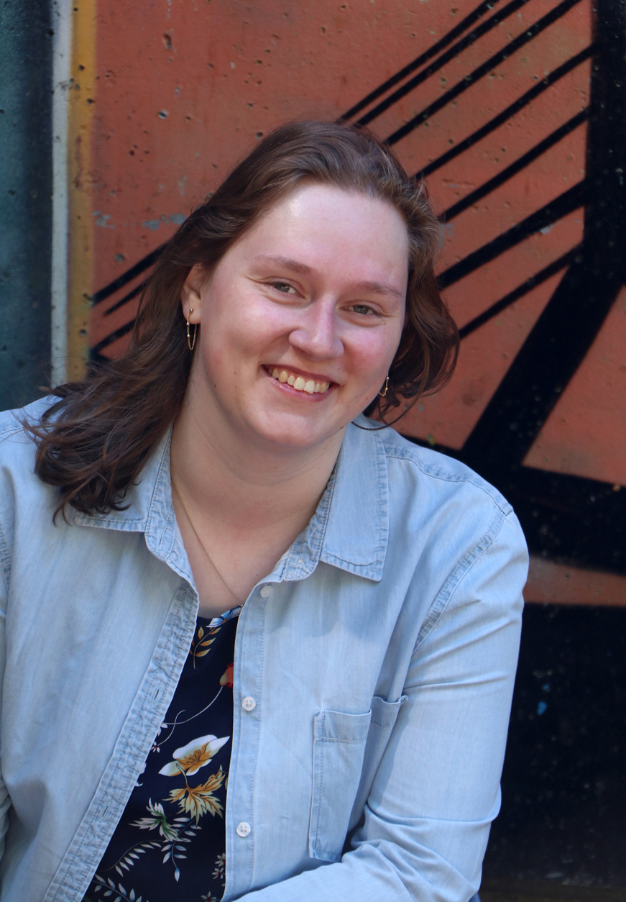

Info
De beste grafisch ontwerper van Nederland in wording, dat is mijn ambitie in een notendop. Ik heb oog voor detail, speel graag met typografie en beeld, en ontwikkel mij ook op Digitoegankelijk ontwerp, zodat iedereen het eindproduct kan en mag ervaren. Momenteel ben ik werkzaam bij NWO als communicatie medewerker en huisstijlcoördinator.
